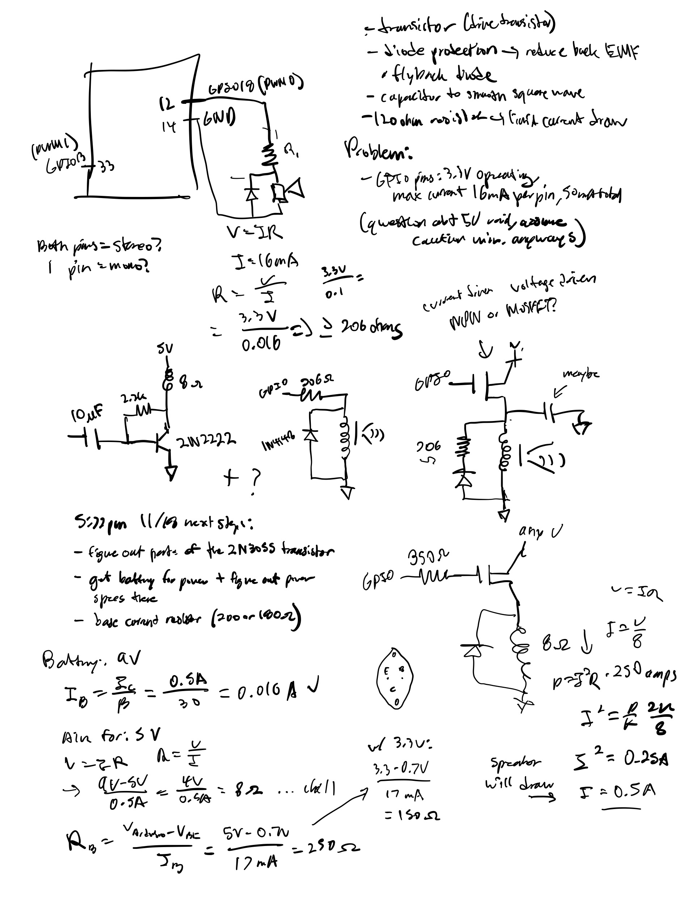
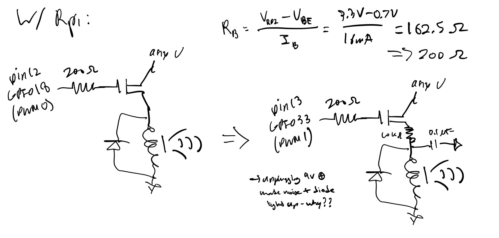
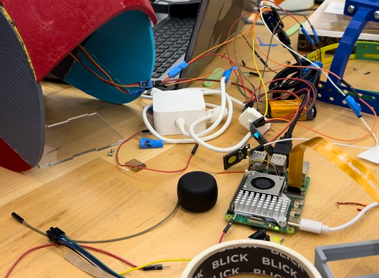
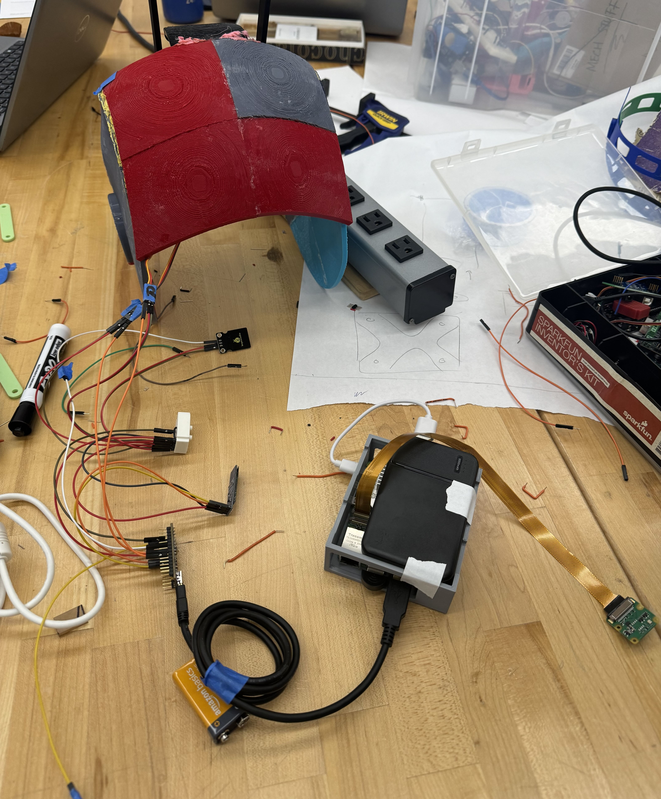
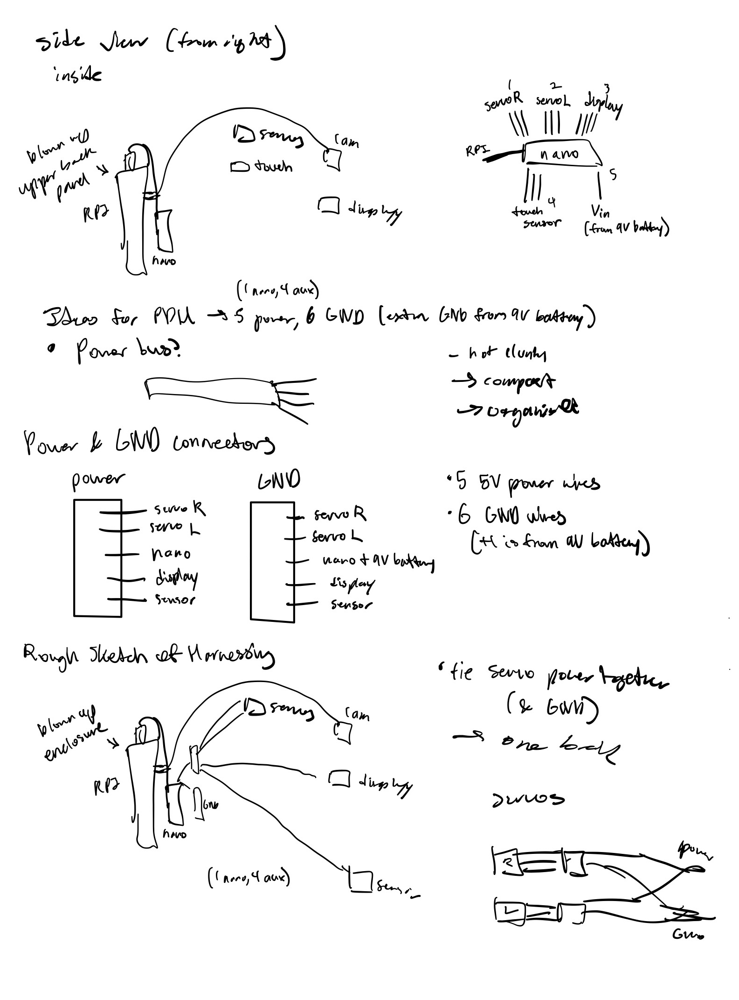
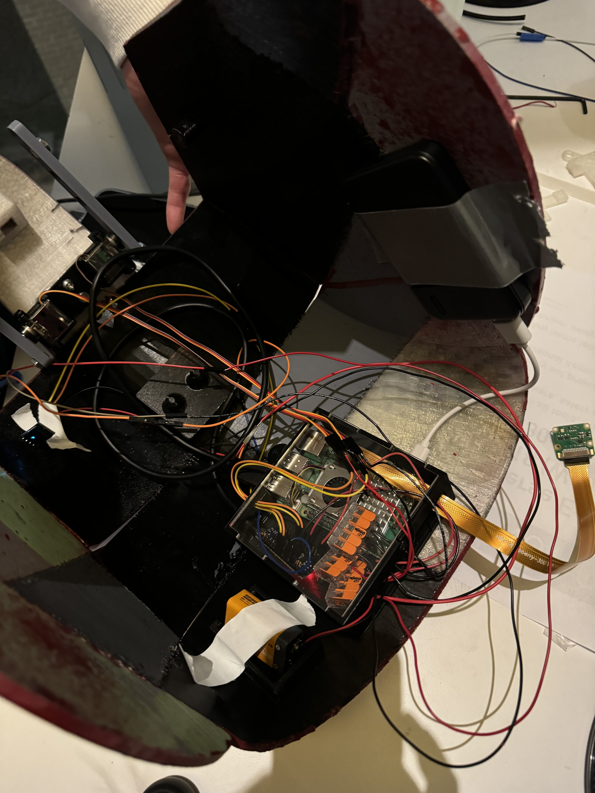
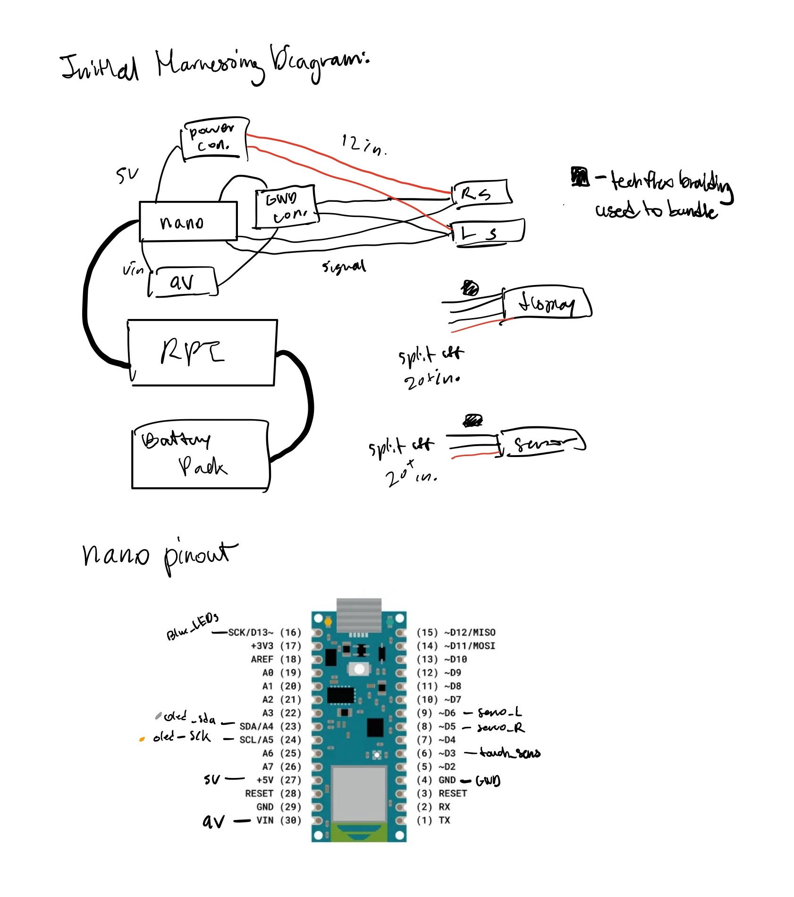
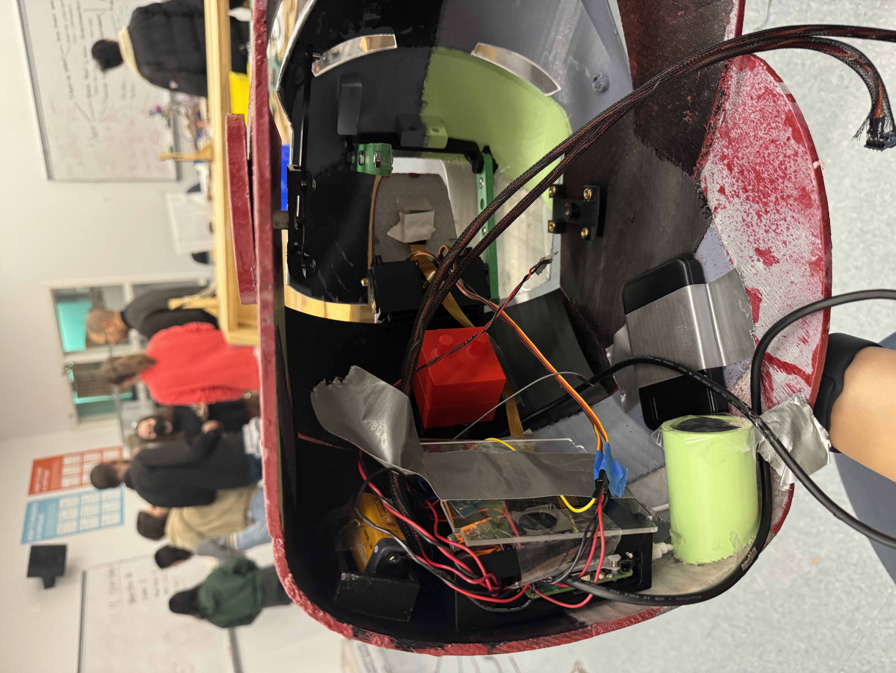

Electrical Design
This page goes over the design process for the electrical system of the project.
Electrical System Overview
The electrical system centers around a Raspberry Pi 5 and Arduino Nano as the heart and controls of the electrical system, with multiple auxillary devices (described more below in Electrical Components) connected to them as our various Iron Man features. For this electrical system, the greatest considerations did not lie in the complexity of the circuity concepts, but rather in how to accomodate for a large amount of individual electrical devices while keeping power distribution manageable, as well as our system portable and resilient.
Electrical Components Overview
This section covers all the electrical devices and components used in the project, including sensors, actuators, and displays, each with its own detailed description. The main consideration when specing out these components was space, since all these components needed to be able to fit on a helmet; balancing functionality, time efficiency, and budget together was another big focus.
Touch Sensor

The touch sensor is another way of detecting user input. It plays a crucial role in allowing interaction with the system without relying on the voice asisstant. We used the KeyeStudio touch sensor for this helmet. To hook up the touch sensor, we connected its V pin to the Nano's 5V pin, G pin to the Nano's GND, and the S pin to digital pin 3.
Servos

Servos are used for precise control of mechanical components, allowing for movement in response to user input or commands. In development for our first few sprints, we used small servos that struggled to lift the weight of the cantilevered mask. For the final helmet, we swapped to larger servos. These servos were crucial because of their high precision, allowing us to make sure they could actuate the mask together despite facing opposite directions. The wiring for these servos consisted of connecting its power pin to the Nano's 5V, the GND pin to the Nano's shared GND, and the signal pin to digital pins 6 and 7.
Microphone

The microphone captures audio input from the environment. It is an essential part of any voice interaction system, enabling the project to respond to sound and spoken commands. To minimize space, we used a mini USB microphone plugged directly into the Raspberry Pi 5's USB port.
Camera

The camera is used for visual input. It is critical for tasks that involve image processing or visual recognition, enabling the system to "see" its surroundings. For the sake of this project, we strictly used the camera to take and save photos to a folder stored on our Raspberry Pi 5. With more time, we'd love to expand on the capabilityies of the PiCamera v2. To connect up the camera, we attached it to one of the ribbon cable ports on the Raspberry Pi.
Speaker
The speaker allows the system to output sound, such as voice feedback or alerts, creating an interactive experience with audio cues. Initially, we attempted to output sound through an 8 ohm speaker using PWM signals from the Raspberry Pi's GPIO pins to simulate the audio signals; this came from our learning that the Raspberry Pi 5 does not have a headphone jack (unlike previous models such as the Raspberry Pi 3 and 4), and in our initial interest to not spend additional budget on an external DAC (digital to analog converter) board or hat that would allow us to play audio, we decided to attempt this PWM simulation with the materials we had on hand.

The circuit above was the result of multiple iterations of circuit designing, as there were multiple aspects at play here. One, the maximum recommended rating for current draw from the GPIO pins from the Raspberry Pi were quite low, around 16mA depending on the source. Two, the voltage output from the PWM GPIO pins is 3.3V. Three, given the delicate nature of the GPIO pin and the use of an inductive component, it would be wise to prevent flyback current and EMF from interfering with the GPIO pin. See work of the iterations below:
Ultimately, the circuit was settled with these last two variations:
Unfortunately, through these iterations, and getting a rewarding output of tones playing from the speaker from the Raspberry Pi, this speaker set up actually ended up not working. It ended up being that it was actually impossible to output PWM at high enough frequencies for speech on the Raspberry Pi 5, since the hardware PWM libraries required for the increased frequencies are not yet comptabile with the 5.
So, we switched to using a small Bluetooth speaker, as seen in the image below next to the RasPi:
The main takeaway here was, while learning was certaintly conducted and was interesting, at times it might be more efficient to sacrifice a bit of extra budget ($9) to save hours on a non-focus feature.
OLED Display

The OLED display is used to provide visual feedback to the user. It can display text, icons, or images that are important for the operation and status of the system. As the OLED uses I2C protocol to communicate, we wired up digital pin 4 and 5 from our Arduino Nano into the SDA and SCK pins of the OLED display respectively while providing the Nano's 5V into it's VCC pin and connecting it's GND pin to the Nano's shared GND.
Electrical Integration Overview
As mentioned above, the main challenges with this electrical system lay in designing and integrating for such a compact space, while accounting for movement of the system as the user moves and the process to put the helmet on shakes the helemt around quite a bit.
For our initial "integration" tests, this did not play much of a factor, as our electrical system hadn't yet be contained to be inside the helmet:
Before moving to fully portable, we switched from the official Raspberry Pi outlet charger to a battery pack; the reduced power supply would give us some overcurrent draw issues from the servos, which would result in a Serial I/O error on the Raspberry Pi. So, we added a 9V battery to power the Nano, and thereby the servos as well, through its Vin pin.

Moving forward, our next step was to then test the fit of these components with the actual helmet's spacing and mounts, as seen below. These spacing and mounts had ungone a dialogue with mechanical through the project of how these various components could fit, which changed quite a few times as various components were changed or added. At this point, it was necessary to create more organization of our system, through mapping out the lengths of the wires in the helmet and making an initial harnessing diagram for the helmet. Additionally, we now have Wago lever connectors serving as our power and ground distribution centers, which improved upon our previous bulkier and less secure mini breadboard.
 From this, it was a success to see how most of our electrical components could fit within our space restrictions. However, this is when we really noticed the portable and wearable aspects of the helmet affecting our electrical system, as our DuPont wires kept disconnecting as the user moved around. So, in order to organize our compact cluster of wires better, and create more reliable connections throughout our system, we further clarified the harnessing of the helmet as well as locked in on the Nano pinout. This allowed us to heat shrink and sauter a select number of actual wires to the Nano's pins and the auxillary devices, which made the connections much more reliable. We also used TechFlex mesh with the display and touch sensor wires, in order to both aesthetically organize the wires but also keep them braided together to preserve strength as they travel the farthest in the helmet. Note: the duct tape is solely because the enclosure lid would not stay on.
 